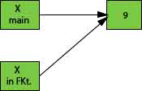
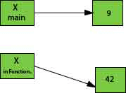
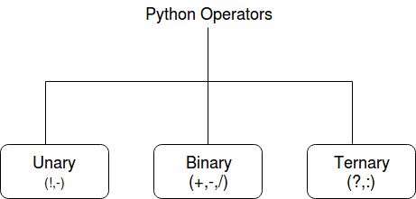

A list of top frequently asked Python interview questions and answers are given below.
Python was created by Guido van Rossum, and released in 1991.
It is a general-purpose computer programming language. It is a high-level, object-oriented language which can run equally on different platforms such as Windows, Linux, UNIX, and Macintosh. It is widely used in data science, machine learning and artificial intelligence domain.
It is easy to learn and require less code to develop the applications.
It is widely used for:
Python is used in various software domains some application areas are given below.
Python provides various web frameworks to develop web applications. The popular python web frameworks are Django, Pyramid, Flask.
Python's standard library supports for E-mail processing, FTP, IMAP, and other Internet protocols.
Python's SciPy and NumPy helps in scientific and computational application development.
Python's Tkinter library supports to create a desktop based GUI applications.
PEP 8 is defined as a document that helps us to provide the guidelines on how to write the Python code. It was written by Guido van Rossum, Barry Warsaw and Nick Coghlan in 2001.
It stands for Python Enhancement Proposal, and its major task is to improve the readability and consistency of Python code.
A function is a section of the program or a block of code that is written once and can be executed whenever required in the program. A function is a block of self-contained statements which has a valid name, parameters list, and body. Functions make programming more functional and modular to perform modular tasks. Python provides several built-in functions to complete tasks and also allows a user to create new functions as well.
There are two types of functions:
Example: A general syntax of user defined function is given below.
There are two parameters passing mechanism in Python:
By default, all the parameters (arguments) are passed "by reference" to the functions. Thus, if you change the value of the parameter within a function, the change is reflected in the calling function as well. It indicates the original variable. For example, if a variable is declared as a = 10, and passed to a function where it?s value is modified to a = 20. Both the variables denote to the same value.
The pass by value is that whenever we pass the arguments to the function only values pass to the function, no reference passes to the function. It makes it immutable that means not changeable. Both variables hold the different values, and original value persists even after modifying in the function.
Python has a default argument concept which helps to call a method using an arbitrary number of arguments.
Python's constructor: _init__ () is the first method of a class. Whenever we try to instantiate an object __init__() is automatically invoked by python to initialize members of an object. We can't overload constructors or methods in Python. It shows an error if we try to overload.
It is a string's function which converts all uppercase characters into lowercase and vice versa. It is used to alter the existing case of the string. This method creates a copy of the string which contains all the characters in the swap case. If the string is in lowercase, it generates a small case string and vice versa. It automatically ignores all the non-alphabetic characters. See an example below.
To remove the whitespaces and trailing spaces from the string, Python providies strip([str]) built-in function. This function returns a copy of the string after removing whitespaces if present. Otherwise returns original string.
This method shuffles the given string or an array. It randomizes the items in the array. This method is present in the random module. So, we need to import it and then we can call the function. It shuffles elements each time when the function calls and produces different output.
A tuple is a built-in data collection type. It allows us to store values in a sequence. It is immutable, so no change is reflected in the original data. It uses () brackets rather than [] square brackets to create a tuple. We cannot remove any element but can find in the tuple. We can use indexing to get elements. It also allows traversing elements in reverse order by using negative indexing. Tuple supports various methods like max(), sum(), sorted(), Len() etc.
To create a tuple, we can declare it as below.
The Python provides libraries/modules that enable you to manipulate text files and binary files on the file system. It helps to create files, update their contents, copy, and delete files. The libraries are os, os.path, and shutil.
Here, os and os.path - modules include a function for accessing the filesystem
while shutil - module enables you to copy and delete the files.
Python provides three modes to open files. The read-only, write-only, read-write and append mode. 'r' is used to open a file in read-only mode, 'w' is used to open a file in write-only mode, 'rw' is used to open in reading and write mode, 'a' is used to open a file in append mode. If the mode is not specified, by default file opens in read-only mode.
An operator is a particular symbol which is used on some values and produces an output as a result. An operator works on operands. Operands are numeric literals or variables which hold some values. Operators can be unary, binary or ternary. An operator which require a single operand known as a unary operator, which require two operands known as a binary operator and which require three operands is called ternary operator.
For example:
Python uses a rich set of operators to perform a variety of operations. Some individual operators like membership and identity operators are not so familiar but allow to perform operations.
Python is an interpreted language. The Python language program runs directly from the source code. It converts the source code into an intermediate language code, which is again translated into machine language that has to be executed.
Unlike Java or C, Python does not require compilation before execution.
Memory is managed in Python by the following way:
In Python, variables that are only referenced inside a function are called implicitly global. If a variable is assigned a new value anywhere within the function's body, it's assumed to be a local. If a variable is ever assigned a new value inside the function, the variable is implicitly local, and we need to declare it as 'global' explicitly. To make a variable globally, we need to declare it by using global keyword. Local variables are accessible within local body only. Global variables are accessible anywhere in the program, and any function can access and modify its value.
The namespace is a fundamental idea to structure and organize the code that is more useful in large projects. However, it could be a bit difficult concept to grasp if you're new to programming. Hence, we tried to make namespaces just a little easier to understand.
A namespace is defined as a simple system to control the names in a program. It ensures that names are unique and won't lead to any conflict.
Also, Python implements namespaces in the form of dictionaries and maintains name-to-object mapping where names act as keys and the objects as values.
In Python, iterators are used to iterate a group of elements, containers like a list. Iterators are the collection of items, and it can be a list, tuple, or a dictionary. Python iterator implements __itr__ and next() method to iterate the stored elements. In Python, we generally use loops to iterate over the collections (list, tuple).
In Python, the generator is a way that specifies how to implement iterators. It is a normal function except that it yields expression in the function. It does not implements __itr__ and next() method and reduce other overheads as well.
If a function contains at least a yield statement, it becomes a generator. The yield keyword pauses the current execution by saving its states and then resume from the same when required.
Slicing is a mechanism used to select a range of items from sequence type like list, tuple, and string. It is beneficial and easy to get elements from a range by using slice way. It requires a : (colon) which separates the start and end index of the field. All the data collection types List or tuple allows us to use slicing to fetch elements. Although we can get elements by specifying an index, we get only single element whereas using slicing we can get a group of elements.
The Python dictionary is a built-in data type. It defines a one-to-one relationship between keys and values. Dictionaries contain a pair of keys and their corresponding values. It stores elements in key and value pairs. The keys are unique whereas values can be duplicate. The key accesses the dictionary elements.
Keys index dictionaries.
Let's take an example.
The following example contains some keys Country Hero & Cartoon. Their corresponding values are India, Modi, and Rahul respectively.
Python sequences are accessible using an index in positive and negative numbers. For example, 0 is the first positive index, 1 is the second positive index and so on. For negative indexes -1 is the last negative index, -2 is the second last negative index and so on.
Index traverses from left to right and increases by one until end of the list.
Negative index traverse from right to left and iterate one by one till the start of the list. A negative index is used to traverse the elements into reverse order.
The Python pickle is defined as a module which accepts any Python object and converts it into a string representation. It dumps the Python object into a file using the dump function; this process is called pickling.
The process of retrieving the original Python objects from the stored string representation is called as Unpickling.
Java and Python both are object-oriented programming languages. Let's compare both on some criteria given below:
| Criteria | Java | Python |
|---|---|---|
| Ease of use | Good | Very Good |
| Coding Speed | Average | Excellent |
| Data types | Static Type | Dyanmic Type |
| Data Science and Machine learning application | Average | Very Good |
Python 2.x is an older version of Python. Python 3.x is newer and latest version. Python 2.x is legacy now. Python 3.x is the present and future of this language.
The most visible difference between Python2 and Python3 is in print statement (function). In Python 2, it looks like print "Hello", and in Python 3, it is print ("Hello").
String in Python2 is ASCII implicitly, and in Python3 it is Unicode.
The xrange() method has removed from Python 3 version. A new keyword as is introduced in Error handling.
In Python, some amount of coding is done at compile time, but most of the checking such as type, name, etc. are postponed until code execution. Consequently, if the Python code references a user-defined function that does not exist, the code will compile successfully. The Python code will fail only with an exception when the code execution path does not exist.
The shortest way to open a text file is by using "with" command in the following manner:
The enumerate() function is used to iterate through the sequence and retrieve the index position and its corresponding value at the same time.
Since indexing starts from zero, an element present at 3rd index is 7. So, the output is 7.
The anonymous function in python is a function that is defined without a name. The normal functions are defined using a keyword "def", whereas, the anonymous functions are defined using the lambda function. The anonymous functions are also called as lambda functions.
Because it is used to make the new function object and return them in runtime.
We can use the inbuilt function str() to convert a number into a string. If you want an octal or hexadecimal representation, we can use the oct() or hex() inbuilt function.
Local variables: If a new value is assigned by a variable within the function's body, it is assumed to be local.
Global variables: These are the variables that are only referenced inside a function are implicitly global.